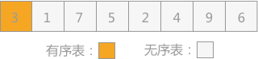
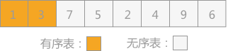
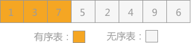
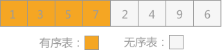
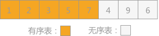
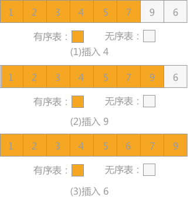

插入排序算法及C语言实现
插入排序算法是所有排序方法中最简单的一种算法，其主要的实现思想是将数据按照一定的顺序一个一个的插入到有序的表中，最终得到的序列就是已经排序好的数据。
直接插入排序是插入排序算法中的一种，采用的方法是：在添加新的记录时，使用顺序查找的方式找到其要插入的位置，然后将新记录插入。
直接插入排序的具体代码实现为：
直接插入排序算法本身比较简洁，容易实现，该算法的时间复杂度为
直接插入排序是插入排序算法中的一种，采用的方法是：在添加新的记录时，使用顺序查找的方式找到其要插入的位置，然后将新记录插入。
例如采用直接插入排序算法将无序表很多初学者所说的插入排序，实际上指的就是直接插入排序算法，插入排序算法还包括折半插入排序、2-路插入排序，表插入排序和希尔排序等，后序文章都会一一讲到。
{3,1,7,5,2,4,9,6}进行升序排序的过程为：
-
首先考虑记录 3 ，由于插入排序刚开始，有序表中没有任何记录，所以 3 可以直接添加到有序表中，则有序表和无序表可以如图 1 所示：

图 1 直接插入排序（1）
-
向有序表中插入记录 1 时，同有序表中记录 3 进行比较，1<3，所以插入到记录 3 的左侧，如图 2 所示：

图 2 直接插入排序（2）
-
向有序表插入记录 7 时，同有序表中记录 3 进行比较，3<7，所以插入到记录 3 的右侧，如图 3 所示：

图 3 直接插入排序（3）
-
向有序表中插入记录 5 时，同有序表中记录 7 进行比较，5<7，同时 5>3，所以插入到 3 和 7 中间，如图 4 所示：

图 4 直接插入排序（4）
-
向有序表插入记录 2 时，同有序表中记录 7进行比较，2<7，再同 5，3，1分别进行比较，最终确定 2 位于 1 和 3 中间，如图 5 所示：

图 5 直接插入排序（5）
-
照此规律，依次将无序表中的记录 4，9 和 6插入到有序表中，如图 6 所示：

图 6 依次插入记录4，9和6
直接插入排序的具体代码实现为：
#include <stdio.h>
//自定义的输出函数
void print(int a[], int n ,int i){
printf("%d:",i);
for(int j=0; j<8; j++){
printf("%d",a[j]);
}
printf("\n");
}
//直接插入排序函数
void InsertSort(int a[], int n)
{
for(int i= 1; i<n; i++){
if(a[i] < a[i-1]){//若第 i 个元素大于 i-1 元素则直接插入；反之，需要找到适当的插入位置后在插入。
int j= i-1;
int x = a[i];
while(j>-1 && x < a[j]){ //采用顺序查找方式找到插入的位置，在查找的同时，将数组中的元素进行后移操作，给插入元素腾出空间
a[j+1] = a[j];
j--;
}
a[j+1] = x; //插入到正确位置
}
print(a,n,i);//打印每次排序后的结果
}
}
int main(){
int a[8] = {3,1,7,5,2,4,9,6};
InsertSort(a,8);
return 0;
}
运行结果为：
1:13752496
2:13752496
3:13572496
4:12357496
5:12345796
6:12345796
7:12345679
2:13752496
3:13572496
4:12357496
5:12345796
6:12345796
7:12345679
直接插入排序算法本身比较简洁，容易实现，该算法的时间复杂度为
O(n2)。插入排序的其它 4 种排序方法，在后序章节中有详细介绍。
关注公众号「站长严长生」，在手机上阅读所有教程，随时随地都能学习。内含一款搜索神器，免费下载全网书籍和视频。

微信扫码关注公众号